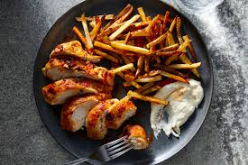

Chicken and fries

Description
It is a consistent dish, given the chicken packed recipe. It is fairly easy to nail on your first try and its only two ingredients make it so you don't have much to prepare.
Ingredients
- chicked 500g
- potatoes 200g
Steps
- cut the potatoes into pieces
- slice the chicken into thin pieces
- fry the chicken
- fry the potatoes
Homepage